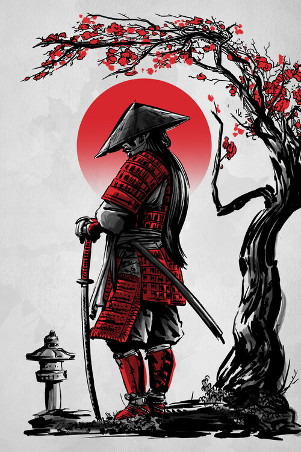
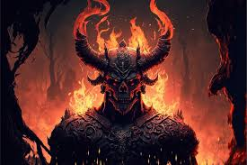
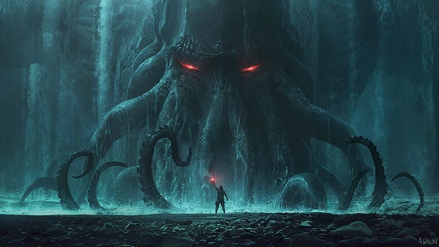
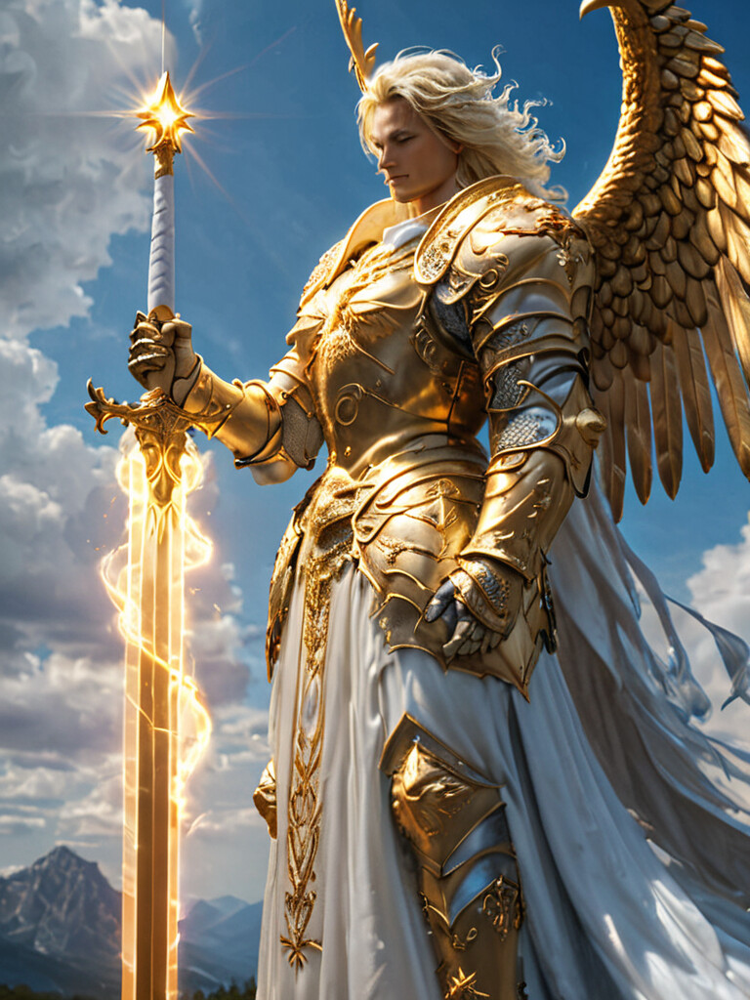

Bóveda de colecciones
Amanecer del Ronin
En los albores de una era convulsa, cuando los clanes caen y los códigos de honor se quiebran, surge una nueva fuerza: los ronin. Sin maestros, pero no sin causa, estos guerreros vagan por tierras desoladas, enfrentando demonios, generales corruptos y fantasmas del pasado. "Amanecer del Ronin" introduce cartas únicas con mecánicas de contraataque, decisiones de lealtad y habilidades que cambian según el ciclo del día. Incluye nuevos héroes legendarios, katanas encantadas, espíritus del bushido y artefactos que alteran el destino del duelo.
Sublevación Demoniaca
Desde las grietas olvidadas del mundo, fuerzas ancestrales emergen para reclamar lo que una vez fue suyo. La balanza entre luz y sombra se ha roto, y ahora los demonios no se esconden: se sublevan. "Sublevación Demoniaca" desata una oleada de criaturas infernales, hechiceros malditos y pactos de sangre que alteran las reglas del juego. Nuevas mecánicas corruptoras permiten a los jugadores sacrificar recursos por poder abrumador, invocar entidades de otros planos, y alterar el flujo natural de las cartas.
Terror Cósmico
Más allá del cielo, en las profundidades del vacío infinito, fuerzas incomprensibles despiertan. No son demonios, ni dioses, ni sombras… son entidades que existen fuera del tiempo, y su mirada distorsiona la realidad. "Terror Cósmico" es una colección que introduce cartas con efectos impredecibles, desestabilizadores y mecánicas que manipulan el orden del juego: realidades alternas, mutaciones, locura progresiva y distorsión del mazo.
Ascención Angelical
Los cielos han permanecido en silencio por siglos, pero el equilibrio del mundo ya no puede sostenerse. Desde los planos celestiales, los arcontes alados descienden, no como mensajeros, sino como guerreros. Es la hora del juicio. "Ascensión Angelical" presenta una colección de cartas que encarnan pureza, justicia y poder sobrenatural. Con nuevas mecánicas de bendición, invocaciones sagradas y escudos de gracia, los jugadores podrán purificar el campo de batalla, proteger aliados y canalizar castigos divinos contra sus enemigos.